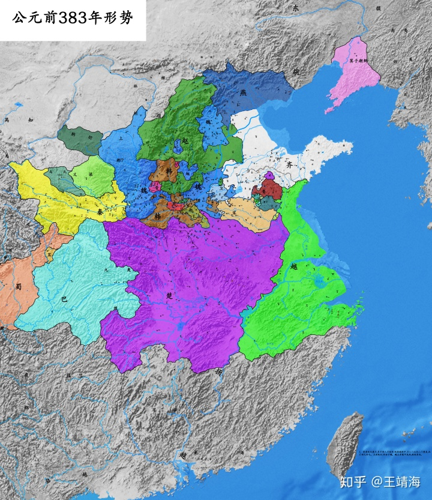

其实说五国伐齐后，齐国沦为三流国家，有点言重了。楚顷襄王十八年（前281），有楚人游说楚王曰：故秦、魏、燕、赵者，鶀鴈也；齐、鲁、韩、卫者，青首也；驺、费、郯、邳者，罗鸗也。外其馀则不足射者。

把齐国比作中雁，仍然视作二流国家。请注意，此时齐国还没有复国——复国是在两年后（前279年），仅凭两座城市就能和韩国列为一档，可见之前的齐国多么强悍。复国后的齐国再弱，恐怕也还是“鶀鴈”级别的一流国家。只不过这是只受过致命伤的鶀鴈，已经无法和当年那只纵横天地间的鶀鴈同日而语了。齐襄王、王建两代君主时期，总体上战争不多，国力得到一定的恢复，仍然是东方六国一支不可小觑的力量。
有名的“触龙说赵太后”即发生在赵孝成王元年（齐襄王十九年，前265年），赵太后新用事，秦攻赵，赵求救于齐，最后以长安君为质，齐兵乃出。齐王建六年，秦赵长平之战，齐国和楚国出兵救援。赵国发生经济危机，“请粟于齐”，但是齐国没有答应。齐国亡国之后，“齐人怨王建不蚤与诸侯合从攻秦”，也说明这一时期的齐国是有援助诸侯的实力的，虽然于大势已经无补，至少可以延缓一下灭亡的时间。
不过，这时候的齐国已经无力争霸，甚至在国防上也无法做到全面防御。前250年，燕国侵占齐国的聊城，鲁仲连射书遗燕将，有一段话比较值得注意：且楚攻齐之南阳，魏攻平陆，而齐无南面之心，以为亡南阳之害小，不如得济北之利大，故定计审处之。今秦人下兵，魏不敢东面；衡秦之势成，楚国之形危；齐弃南阳，断右壤，定济北，计犹且为之也。且夫齐之必决於聊城，公勿再计。
也就是说楚国攻陷了齐国的南阳之地，魏国攻下了齐国重要的城市平陆，这两块地方都在齐的南面，但是齐国没有收复的意思，一方面当然是受限于实力，另一方面，楚、魏受到秦国的牵制，无法更进一步入侵齐国，而且南方还有一定的地理屏障，齐国不需要担心它们会长驱直入。但与燕赵接壤的济北不同，这两国本身受秦国的牵制较楚魏就小，北方地区又无险可守，五国伐齐和秦国灭齐，齐国的两次灭国都是从这个地方被长驱直入。因此齐国在三国交攻的情况下，采取了重点防御北方战线的策略：南阳和平陆可以不管，但聊城是一定要全力收复的。齐国复国后，仅有的两次攻取土地，除了这次收复聊城，还有一次是秦赵邯郸之战中，齐国伙同魏国趁火打劫，攻取了赵国的淄鼠，也是发生在北方战线。齐国后期除了偶尔参与诸侯的合纵之外，更多的是与秦连横。
这里面大概有齐国的主观意愿，亡国五年的沉痛经历，齐国上下肯定对燕赵楚魏恨透了，自己无法复仇，巴不得秦国这个大流氓把他们全部打残。而且客观形势上，齐国不与秦交界，燕赵楚魏对齐国造成的威胁比秦国要大得多，特别是赵国，动不动就伐齐，简直是逼着齐国连横。（赵悼襄王）四年，庞煖将赵、楚、魏、燕之锐师，攻秦蕞，不拔；移攻齐，取饶安。
诸侯合纵打不过秦国，反过头来把齐国给打了，这找谁说理去？这也透露出一个信息，列国对抗不了秦国，有一种“失之秦国，得之齐国”的心态，这简直和后世金国打不过蒙古，转而南掠宋朝的策略如出一辙。这种情况下，齐国防御列国都得靠秦国这个搅屎棍，更甭提收复土地了
编辑作者：小染 2023-6-2 23:46